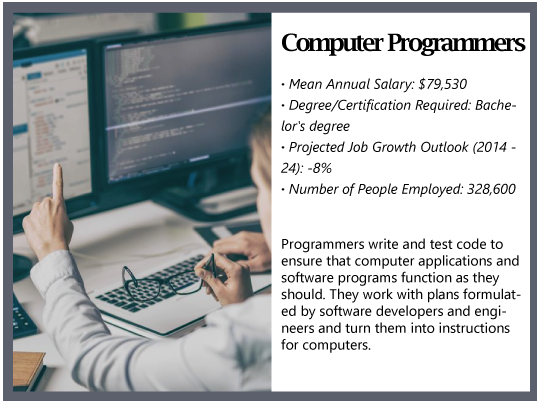
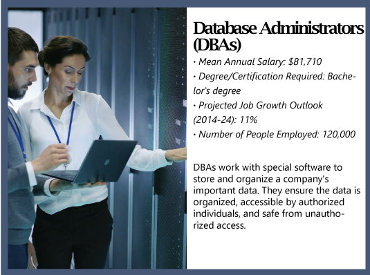
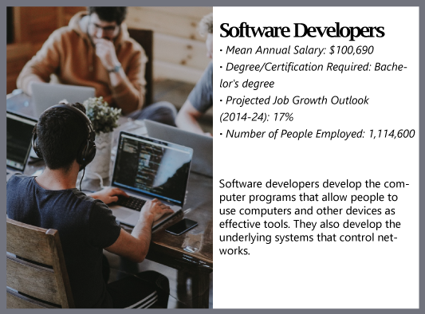

Careers in technology
Overview
 A technology occupation is any position that works with the logical, numerical, and computational parts of designing or the connected sciences. It is an assorted field with many different professions, including computer engineering, web design, and game development.
A technology occupation is any position that works with the logical, numerical, and computational parts of designing or the connected sciences. It is an assorted field with many different professions, including computer engineering, web design, and game development.
 The employment requirement varies with the company. Bigger corporation like Google, for instance, regularly lean toward candidates who have earned a four-year university degree. On the other hand, numerous new businesses are concerned less with qualifications and more with what hard abilities a candidate has.
The employment requirement varies with the company. Bigger corporation like Google, for instance, regularly lean toward candidates who have earned a four-year university degree. On the other hand, numerous new businesses are concerned less with qualifications and more with what hard abilities a candidate has.
 Some of the characteristics people go into technology-related career have include being independent, able to solve complex problems on their own; work in teams, especially for big companies; willing to be always learning new things in this fast changing career; and communicate effectively with coworkers with
Some of the characteristics people go into technology-related career have include being independent, able to solve complex problems on their own; work in teams, especially for big companies; willing to be always learning new things in this fast changing career; and communicate effectively with coworkers with
understandable words.
Tech Growth in Canada -- Focus on Toronto
In a sense, the tech sector growth of Toronto shadows Canada's tech sector growth.
Toronto is perceived for having the most well-developed and popular tech sector in the nation on pretty much every aspect of measurements, by a wide range of research investigations. The map below dynamically demonstrates the tech sector growth of Canada radiating around Toronto, depicting the technology occupation development in the year of 2017-2018 from many pieces of research and data in the market.
*Click through the slides to view each layer individually in this presentation, and be sure to click on the highlighted locations to get all the relevant details.*
Educational Paths to Careers in Technology
Commonly, a bachelor's degree is the standard educational requirement for people who want to go into computer science and related careers. However, the employee might also accept people who have associated degree or training certificate. Graduates of "code boot camps" may also find quality employment with future training.
Here are some of the most popular college majors, for two-year or four-year degrees, that lead to technology careers:
Computer Engineering
Students focus on computer science, engineering, mathematics, and physics. Graduates of a computer engineering program go on to become software developers, computer programmers, and systems engineers.
Computer Science
Students are introduced to programming along with the science and math of modern computing. Students learn languages such as Java, C++, and Octave. Jobs for graduates include software architect, application software designer, and programmer.
Game Design and Development
The course of study includes game history, analysis, and aesthetics, along with a focus on 2D- and 3D-level design. Students may study drawing, modeling, animation, film, and music. There is also a strong emphasis on design documentation and play-testing. Future career paths include working as a game designer, system designer or technical designer.
Information Security Systems
The major includes coursework in information assurance, information security, network design and engineering, and business continuity. Students will learn how to protect organizational assets from threats of all kind. This course of study prepares students for a career as an information security manager, risk assessor, or analyst.
Network Management
The program introduces students to the principal of how to design networks, make technology-adoption and standards decisions, and create cost models for new technology implementations. Career paths include network analyst, network technician, and network systems engineer.
Software Engineering
The course work involves software engineering classes, along with computer science, project management, mathematics, and statistics. Students go on to become software engineers, software developers and database analysts.
*Information from https://www.bestcolleges.com/*
Women in Tech
There is a need to stress one particular group of people working in tech -- women. Although our society is much open and equal than the past in terms of gender difference, statistics still show that there are much fewer women than men in technology-related careers and mistreatments still exist in the workforce on women. Wage inequality compared to male colleagues, workplace gender bias and a shortage of female role models are among the main barriers faced by women working in the technology field, according to a survey by global technology association ISACA.
"The Future Tech Workforce: Breaking Gender Barriers" report identified the top five barriers experienced by women in tech as:
- Lack of mentors (48 percent)
- Lack of female role models in the field(42 percent)
- Gender bias in the workplace (39 percent)
- Unequal growth opportunities compared to men (36 percent)
- Unequal pay for the same skills (35 percent)
*Information from https://www.sensorsmag.com/*
The graph below shows the main reasons why women do not want to go into technology related field in the first place.

* Illustration from https://www.sensorsmag.com/.*
However, in the meantime, the society should encourage women to go in technology fields, because women in tech are not only vital -- they can be the leaders!
Career Paths in Technology
There are dozens of computer jobs and endless career paths individuals can take as a technology professional, all of which depend on multiple factors including specific training, interests, and job requirements and responsibilities. Below are some of the most prominent career paths, along with the mean average salary, the degree or certificate requirements, and its growth opportunities for the future.




*All data from the U.S. Labor Department's Bureau of Labor Statistics.*
Additional Resources
Whether you are a new college graduate or a seasoned IT professional, these sites will help you find jobs, expand your skills, and network with others in the tech fields.
Tech Career Job Sites
- Dice.com: With an easy-to-search database, this site is a "career hub" for IT professionals looking for work.
- iCrunchData: This site specializes in people looking for information technology jobs in big data, analytics, and tech.
- ITJobPro.com: Users can browse lists of the latest tech and engineering jobs, while also purusing tech industry news.
- CrunchBoard: This job board is run by the well-respected tech news site TechCrunch. Jobs are cross-posted to the newsletter and main site.
- TechCareers: Operated by Beyond.com, this site offers access to job listings, educational tools, and networking opportunities.
Continuing Education in Tech
- CompTIA: Continuing Education (CE) programs through CompTIA are designed to help people grow their IT careers, become certified in various skills, and keep their certifications current.
- Florida Institute of Technology: The CE program provides job skills training, career enhancement, and professional enrichment training in science, technology, engineering, and mathematics.
- RailsGuides: Programmers and web developers can begin learning the programming language Ruby on Rails through this site.
- Coursera: By partnering with top universities and organizations worldwide, Coursera offers classes in programming, web design, etc., to improve your skills.
- Codewars: This collective helps programmers improve their skills by training with other coders on real code challenges. Languages include Ruby, Java, CoffeeScript, and more.
*All links from https://www.bestcolleges.com/.*